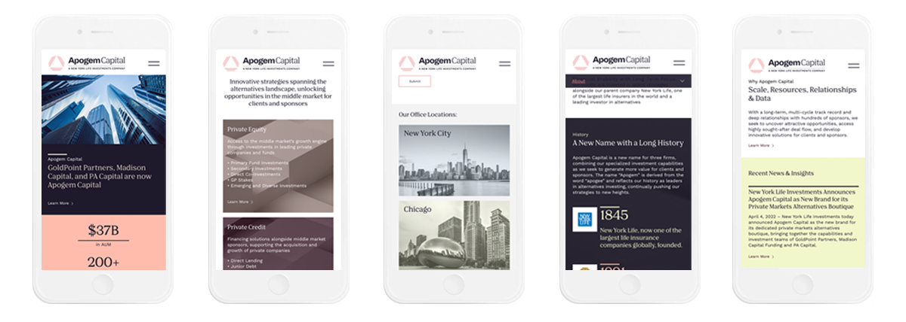
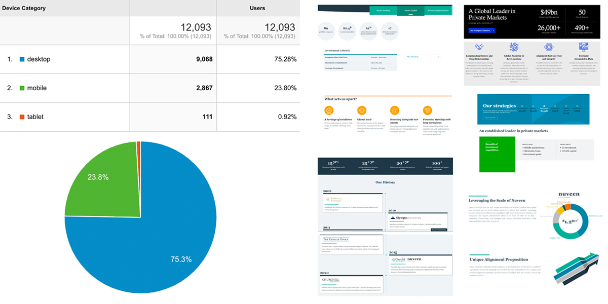
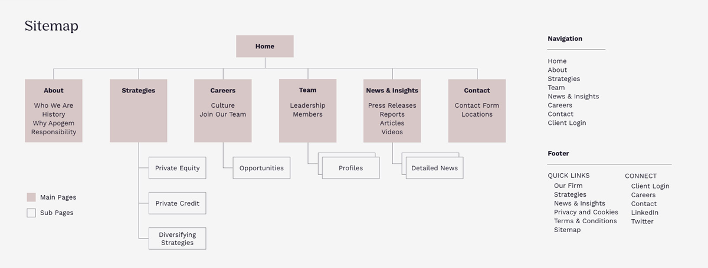
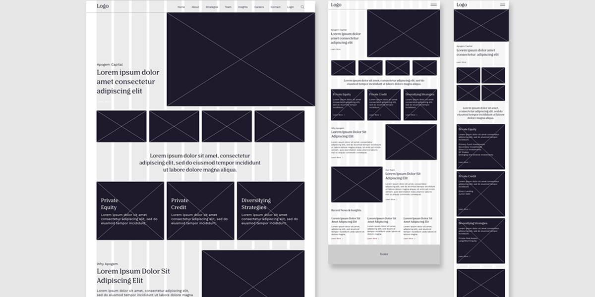
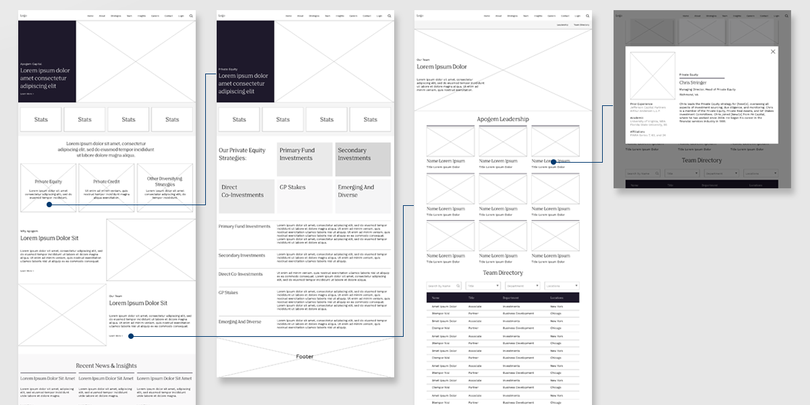
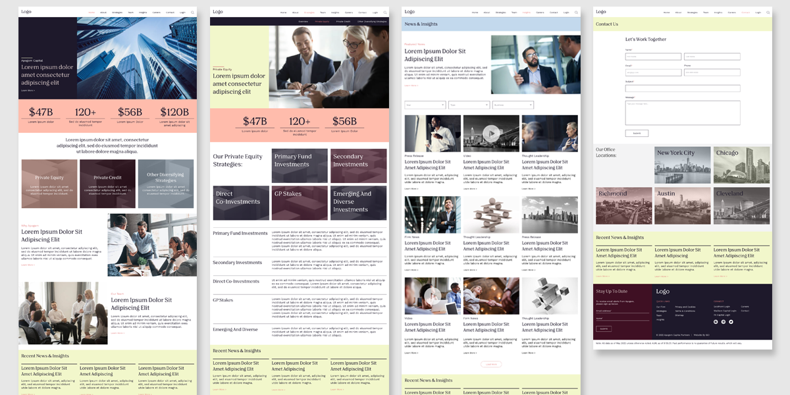
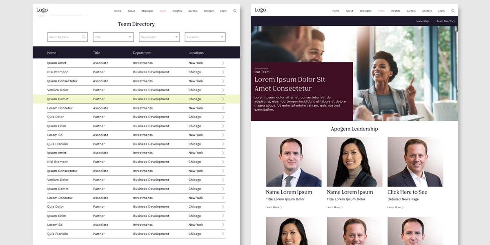
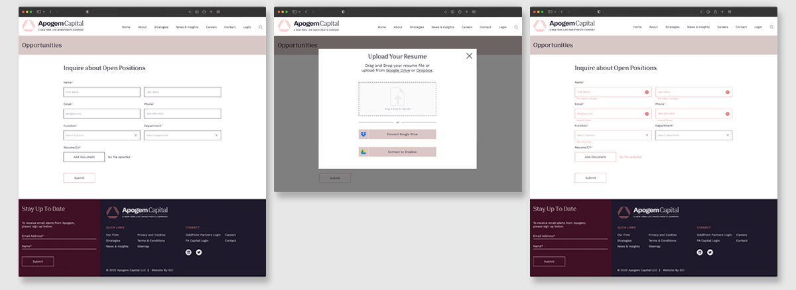
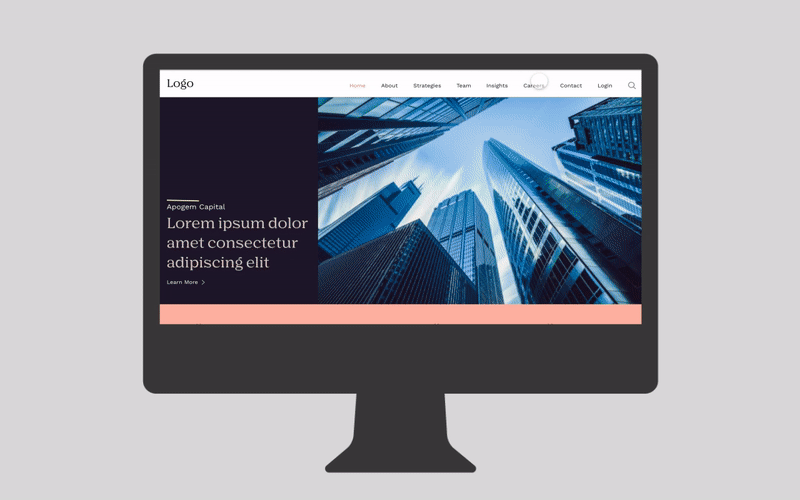

Apogem Capital is a leading alternatives investor, with decades of experience investing in the middle market.
| Roles | Tool | Date |
|---|---|---|
| Art Direction | Adobe XD | 2022 |
| Web Design |

Challenges & Goal
Time constraint and insufficient access to website data were the most challenging aspects of the project. There were also too many people responsible for making decisions on the client's end, which caused inefficiency and unnecessary bureaucracy.
The goal of the project was to design a responsive and user-friendly website that embraced the consistency of the firm's new branding, while keeping the limited timeframe provided by the client.
Solution
Our team had to come up with efficient strategies to complete the project in a timely manner, while focusing on quality. We optimized the process by streamlining communication with the stakeholders, and refining our design approach. We stayed proactive to make sure we got the feedback needed. Finally we were able to launch the site on time.
Google Analytics & Competitor Analysis

Research
Apogem had 3 websites. To start off the design process we studied the one website that was made available to us. Also, we performed a competitive analysis to find out what criteria are important for Apogem' investors when they are looking for. From Google Analytics we found out that 75% of users use a desktop to view the site, so we used the Desktop First approach.
Sitemap

Grid

Wireframes

Mockups: Screen size variations
We included considerations for additional screen sizes in our mockups based on our earlier wireframes. Because users browse from a variety of devices, we felt it was important to optimize the browsing experience for a range of device sizes, such as mobile and tablet so users have the smoothest experience possible.
Mockups

Mockups (Team page)

Mockups (Form)

High-Fidelity Prototype
The hi-fi prototype followed the same user flow as the lo-fi prototype, and included the design changes made after several changes suggested by members of my team and clients.
Prototype(desktop)

Prototype(mobile)